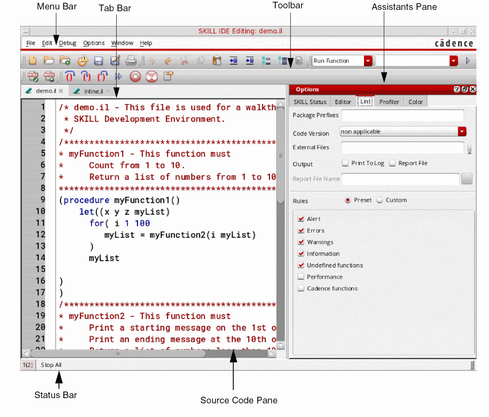

SKILL IDE User Interface
The SKILL IDE interface is user-friendly and intuitive. It consists of menus, toolbars, dialog boxes, and windows that help you control your debugging operations. Therefore, you no longer need to learn complex debugging commands.

The following table describes the elements of the SKILL IDE interface:
SKILL IDE User Interface Components
|
Menu Bar
|
Provides menus for basic file operations as well as editing, debugging, and tool control.
The menu bar contains commands that perform an operation, display a cascade menu, or open a dialog box.
|
|
Toolbars
|
Contains buttons that provide quick access to the commonly used commands in the menu bar.
|
|
Tab bar
|
Displays the currently open files in tabs. It also contains buttons to help manage your tabs.
|
|
Source Code Pane
|
Displays the file being edited or debugged. If line numbering is enabled, line numbers are displayed to the left of the source code pane against each line of code. Syntax highlighting is enabled for the code in this pane for convenient code inspection.
|
|
Assistants Pane
|
Displays the currently enabled window assistants. You can display the Breakpoints, Stack, Trace, Method Browser, Class Browser, Lint Manager, Finder, Code Browser, Profiler, or Step Result assistants. You can also use the Show All and Hide All options to simultaneously display or hide all window assistants.
|
|
Status Bar
|
Displays the window number for each file tab at the bottom of the SKILL IDE window. For example, 1(2), where 1 is the session window number for the SKILL IDE, and 2 displayed (inside the parenthesis) is the window number for the open file.
It also displays the line and column number of the current cursor position.
|
Related Topics
How SKILL IDE Works
Starting SKILL IDE
SKILL IDE Menu Commands
SKILL IDE Assistants
Managing SKILL IDE Toolbars
Managing SKILL IDE Tool Assistants
Return to top